Premiere Pro / After Effects 用 肌補正プラグイン
当てた瞬間に、
肌が自然に整う
肌の色を自動で検出し、輪郭と質感（毛穴・肌理）を残したまま、肌の粗さ・赤み・テカリを整えます。エフェクトを適用するだけで、初期設定（Standard）の補正がかかります。
サブスクリプションではなく、一度の購入で使い続けられます。体験版でも、製品版と同じすべての機能を試せます。体験版の映像には、薄い斜めの縞（ウォーターマーク）が入ります。
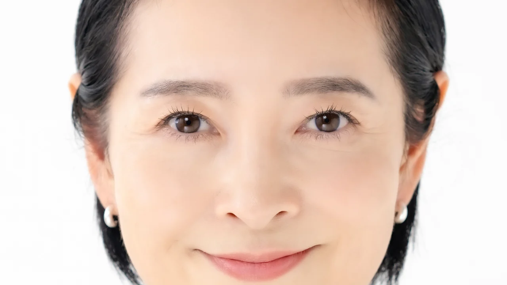
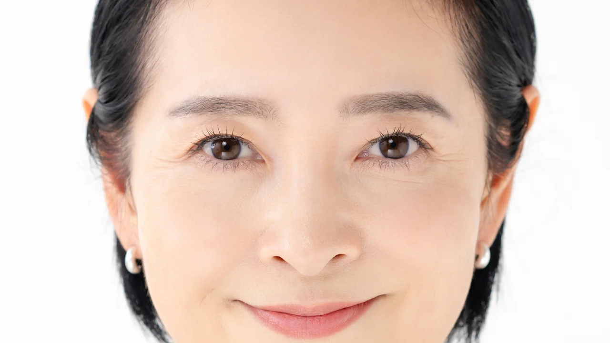
BEFORE AFTER左右にドラッグすると、同じ写真のBeforeとAfterを比べられます。キーボードでは矢印キーで動かせます。
DEMO
デモ動画（30秒）
動画の読み込みは、再生ボタンを押したときに始まります。
FIRST IMPRESSION
初期設定のまま、肌の色ムラを整える
Auto Detectと標準プリセットが最初から有効になっています。クリップに適用した時点で、肌の部分だけに処理がかかります。パラメータを触るのは、仕上がりを好みに寄せたいときだけです。
- 肌の色を自動で検出し、検出した範囲にだけ処理を適用
- エッジ保存型の平滑化とテクスチャ復元で、塗りつぶしたような見た目を避ける
- MV、インタビュー、ブライダルの編集現場で、作者が実際に使いながら開発
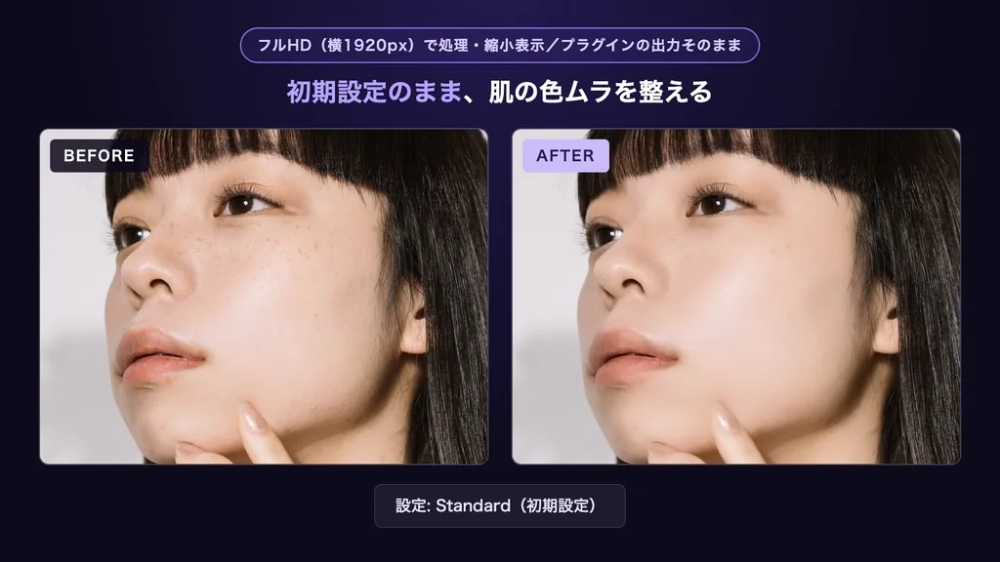
HOW TO USE
使い方は3ステップ
Premiere ProでもAfter Effectsでも、手順は同じです。
-
エフェクトを適用する
エフェクト「Skin Retouch」をクリップに適用します。
-
Presetを選ぶ
Natural、Standard、Strongの3種類から選びます。迷ったときはStandardから始めてください。
-
Amountで強さを調整する
Amountのスライダーで、処理の強さを好みの位置に合わせます。
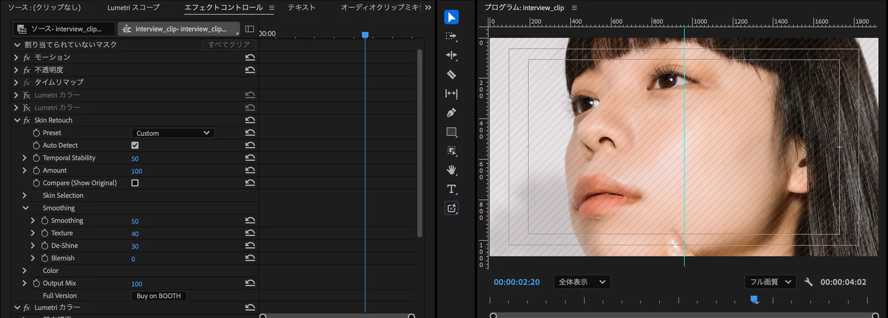
FEATURES
特長
肌の部分だけを処理する
肌の色を自動で検出し、検出した範囲にだけ処理を適用します。Show Maskで検出範囲を確認できます。顔の輪郭や眉、まつげの線は、エッジ保存型の平滑化でぼかさずに残します。
Premiere ProとAfter Effectsの両方で使える
1つのプラグインを、どちらのホストでも使えます。Premiere ProとAfter Effectsの2025以降に対応しています。
買い切りで使える
月額や年額の費用はかかりません。同じメジャーバージョンの中の不具合修正と互換性アップデートは、追加料金なしで受け取れます。
QUALITY
細部の比較
各画像の上部に、縮小表示か、元の解像度からの等倍切り出しかを記載しています。画像は処理前と処理後を並べたもので、プラグインの出力をそのまま使っています。画像をタップまたはクリックすると、元のサイズで開きます。
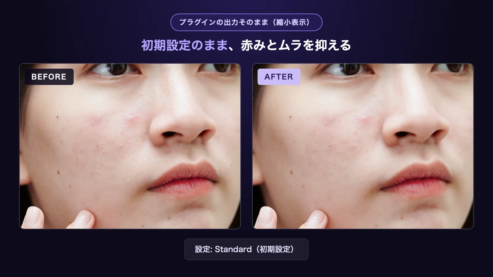
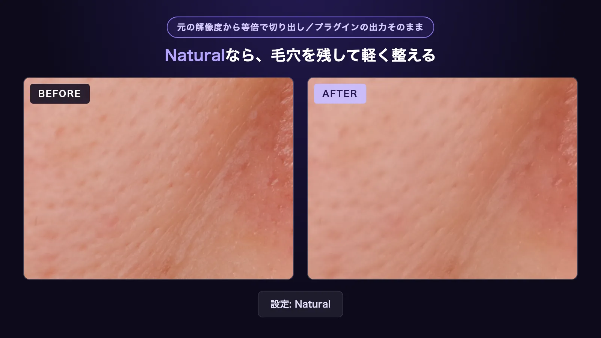
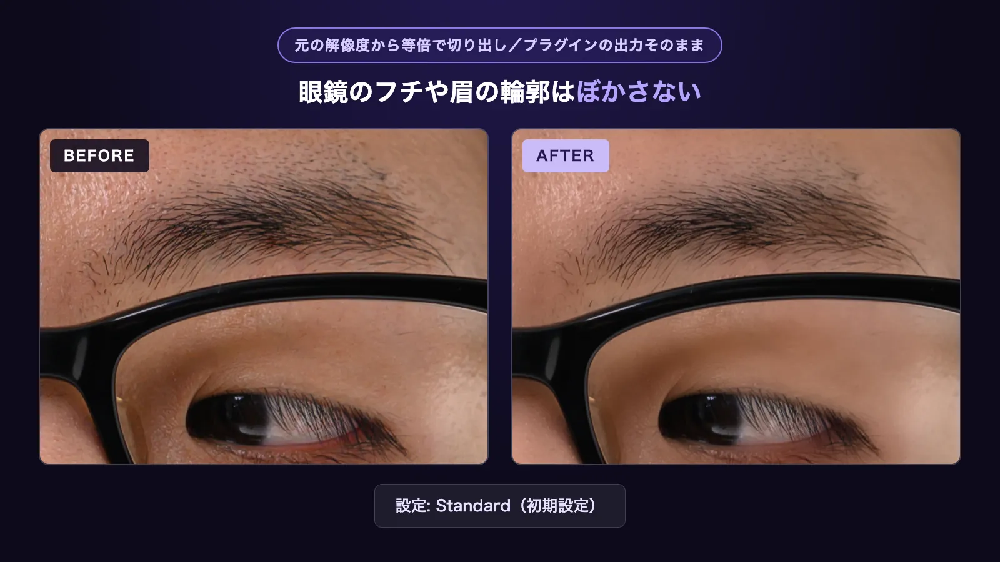
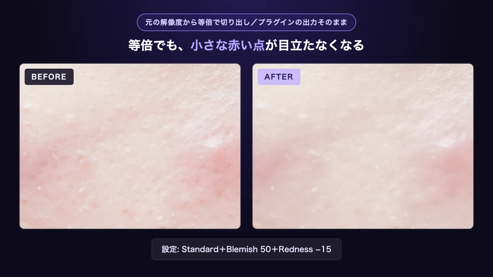
ほかの素材での例
同じフレームの処理前（BEFORE）と処理後（AFTER）です。
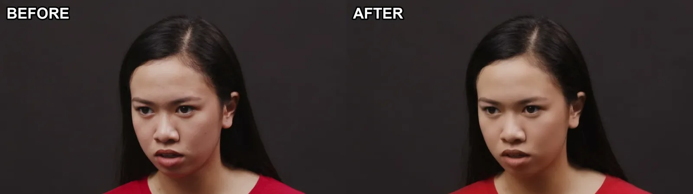
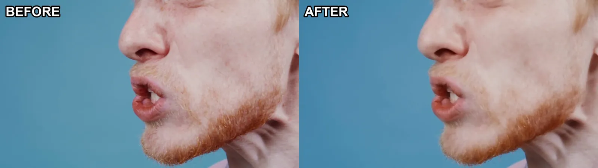
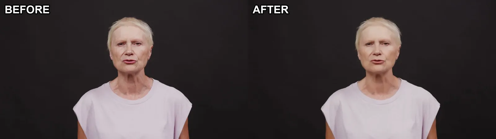
PRESETS
プリセットを選んで、Amountで調整する
Presetは3段階です。段階ごとの違いは、右の比較で確認できます。
- Natural 質感を残して軽く整える
- Standard 標準。初期設定
- Strong しっかり整える
どのプリセットでも、Amountで全体の強さを変えられます。Compareで、原画と見比べながら調整できます。
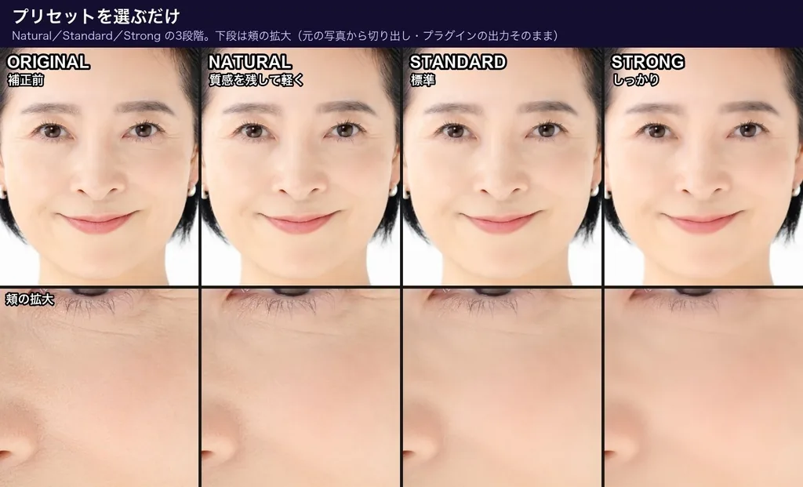
PARAMETERS
主なパラメータ
最初はPresetとAmountだけで使えます。細かく調整したいときに、次のパラメータを使います。
- Presetプリセット
- Natural、Standard、Strongから選びます。
- Amount強さ
- 処理全体の強さを調整します。
- Compare原画と比較
- オンにすると処理前の映像を表示します。オンとオフを切り替えて見比べます。
- Output Mix
- 処理後の映像と元の映像を混ぜる割合を決めます。
- Temporal Stabilityフレーム間の安定
- 肌の検出範囲がフレームごとに変わってちらつくのを抑えます。
- Auto Detect肌の自動検出
- 肌の色を自動で検出します。初期設定で有効です。
- Smoothing平滑化
- 輪郭を保ったまま、肌の粗さを均します。
- Texture質感
- 平滑化で減った毛穴や肌理を、どの程度戻すかを決めます。
- De-Shineテカリ
- 肌のテカリを抑えます。
- Blemish小さなシミ・ニキビ
- 小さなシミやニキビを目立たなくします。
- Redness / Paleness血色・色白
- Rednessで血色を増減し、Palenessで肌を色白または日焼けの方向に調整します。
- Show Mask検出範囲の確認
- 肌として検出された範囲を表示します。Hue Rangeなどの調整に使います。
使う前に知っておいてほしいこと
- 直径7pxを超える大きなホクロは消せません。眉やまつげを保護するための仕様です。
- LOG素材は、Rec.709に変換してから使ってください。
- 肌検出は肌色をもとにしているため、肌に近い色の背景も検出されることがあります。その場合は、Hue Rangeを狭めてください。
SYSTEM REQUIREMENTS
動作環境
Mac
- OS
- macOS 13以降
- CPU
- Apple Silicon / Intel（Universal Binary）
- GPU
- Metal対応GPUで処理します
Windows
- OS
- Windows 10 / 11（64bit）
- 処理
- CPUのみで処理します。GPUは使わないため、Macより処理が重くなります。
Windows版は、2026年11月15日まで無料ベータを公開中です。ベータ版はBOOTHのベータ配布ページから入手できます。2026年11月16日に正式版を公開します。
Windows版は正式版を公開中です。製品版の商品にWindows版が含まれているため、1回の購入でMacとWindowsの両方を使えます。Mac版をすでに購入した方は、BOOTHのライブラリから追加料金なしでWindows版をダウンロードできます。
対応ホスト Premiere Pro / After Effects 2025以降。
ビット深度 After Effectsは8bit、16bit、32bit float。Premiere Proは8bit、32bit float。
PRICING
価格
Totonoe Skin Retouch 製品版
買い切り（サブスクリプションではありません）
- 同じメジャーバージョンの中の不具合修正と互換性アップデートは無償
- 1ライセンスで1ユーザー。自分の複数のマシンにインストールできます
- Premiere ProとAfter Effectsの両方で使えます
BOOTHのダウンロード商品のため、購入後の返金はできません。購入前に、無料体験版で動作や仕上がりを確かめてください。体験版でも製品版と同じすべての機能を使えます。体験版の映像には薄い斜めの縞が入ります。
FAQ
よくある質問
サブスクリプションですか
いいえ、買い切りです。月額や年額の費用はかかりません。同じメジャーバージョンの中の不具合修正と互換性アップデートは、無償で受け取れます。
Windowsでも使えますか
Windows 10 / 11（64bit）で使えます。2026年11月15日までは無料のベータ版を公開しています。11月16日には、製品版の商品にWindows版の正式版を追加します。1回の購入でMacとWindowsの両方を使えます。Mac版をすでに購入した方は、BOOTHのライブラリから追加料金なしでWindows版をダウンロードできます。
Windows版はCPUだけで処理するため、Macより処理が重くなります。詳しくは動作環境を見てください。
DaVinci Resolveで使えますか
現在は対応していません。対応ホストは、Premiere ProとAfter Effectsの2025以降です。
購入前に試せますか
無料体験版をBOOTHで配布しています。製品版と同じすべての機能を使えます。体験版の映像には、薄い斜めの縞（ウォーターマーク）が入ります。ダウンロード商品のため購入後の返金はできないので、体験版で動作と仕上がりを確かめてから購入してください。
複数の人が映っているときは、どうなりますか
同じ系統の肌色の人には、全員に処理が適用されます。特定の人だけに適用したいときは、Premiere ProやAfter Effects側のマスクと併用してください。
背景や衣装の色まで処理されてしまいます
肌の色をもとに検出するため、肌に近い色の背景や小物を拾うことがあります。Show Maskで検出範囲を確認し、Hue Rangeを狭めてください。
LOG素材でも使えますか
LOG素材は、Rec.709に変換してから使ってください。
アップデート後も、保存済みのプロジェクトを開けますか
開けます。パラメータの識別子をバージョンの間で固定しているため、保存済みのプロジェクトでも各パラメータの値が引き継がれます。
困ったときの連絡先は
BOOTHのメッセージで受け付けています。日本語と英語のどちらでも対応します。
まずは無料体験版で、手元の素材に当ててみる
製品版と同じすべての機能を試せます。エフェクトを適用して、Presetを選び、Amountで調整するところまで確認できます。